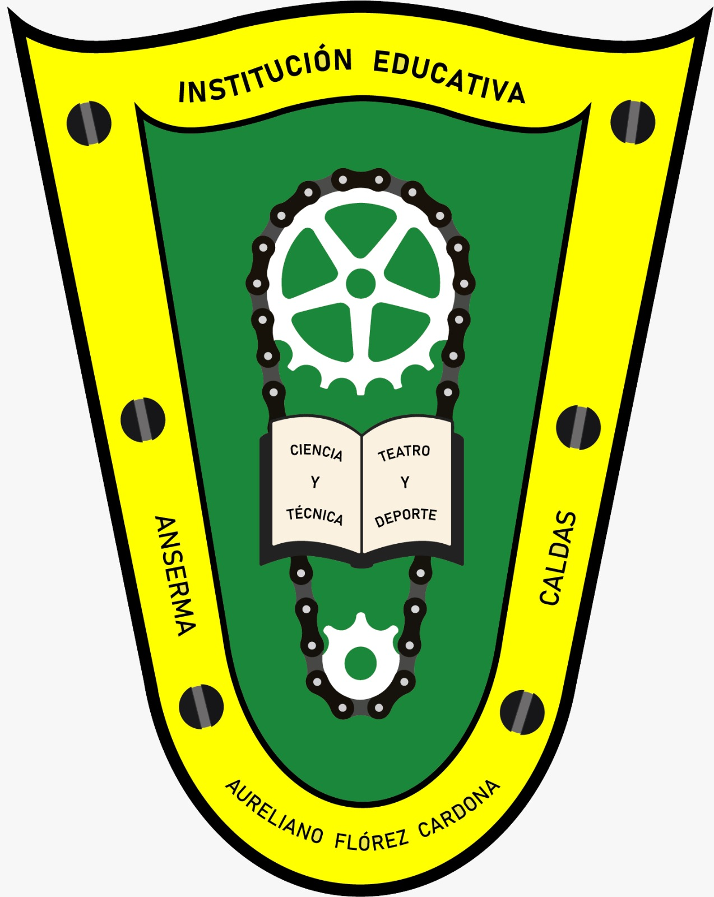

Diversidad cultural, respeto y empatía para construir aulas donde todos cabemos
Institución Educativa Aureliano Flórez Cardona · Anserma, Caldas
Diplomado: Alternativas Pedagógicas en y para la Atención a la Diversidad — Cohorte II
🌄 Caldas Camina hacia la Inclusión 2026
Esta propuesta pedagógica alternativa fue diseñada por docentes de la Institución Educativa Aureliano Flórez Cardona de Anserma, Caldas, como producto del Diplomado Alternativas Pedagógicas en y para la Atención a la Diversidad — Cohorte II, de la Secretaría de Educación del Departamento de Caldas y la Universidad de Manizales.
Imagina tu salón de clase: hay personas nacidas en esta ciudad y en otras regiones o países; quienes comen arepa, pan o frijoles; acentos costeños, paisas, pastusos o vallunos; distintas creencias, familias, gustos y formas de aprender. ¿Todos somos iguales? No. ¿Eso es un problema? Tampoco. Esa variedad es una riqueza. Aquí trabajaremos tres ideas que se necesitan entre sí:
¿Cómo navegar? Usa el menú superior. En 🎮 Juegos Virtuales encontrarás un submenú con los tres juegos. ¡Explora y aprende jugando! 🌈
Despliega cada tema 🌸. Al final sabrás explicar qué es la cultura, reconocer la diversidad de Colombia, identificar cuándo una diferencia se convierte en excusa para excluir, practicar el respeto y la empatía, conocer tus derechos y participar en un aula donde todos cabemos.
La cultura es todo lo que un grupo de personas ha construido y aprendido para vivir junto: su forma de hablar, comer, vestirse, celebrar, creer, trabajar, jugar y convivir. No se hereda en los genes: se aprende en la familia, la comunidad, el colegio y las redes sociales.
Lo que se ve (la punta del iceberg) es la comida, la ropa, la música, las fiestas y el idioma. Lo que no se ve (debajo del agua) son las creencias, los valores y las ideas sobre la familia, el tiempo o lo que es «bueno» o «correcto». Detrás de cada costumbre hay una historia que vale la pena conocer.
Diversidad significa variedad. La diversidad cultural es la existencia de muchas culturas y formas de vivir en un mismo lugar. Imagina un jardín: con una sola flor sería bonito, pero con rosas, girasoles, orquídeas y margaritas está mucho más vivo. O una orquesta: si todos tocáramos el mismo instrumento, la música sería muy pobre.
La diferencia es que somos distintos: es natural y valiosa. La desigualdad es que, por esas diferencias, unas personas reciben menos oportunidades, menos respeto o menos derechos: es injusta. Podemos ser diferentes y, al mismo tiempo, tener los mismos derechos y la misma dignidad.
En 2001 la UNESCO adoptó la Declaración Universal sobre la Diversidad Cultural, y cada 21 de mayo se celebra el Día Mundial de la Diversidad Cultural para el Diálogo y el Desarrollo.
La Constitución de 1991 (artículo 7) reconoce y protege la diversidad étnica y cultural de la Nación. Ser diverso no es un problema que corregir: es una característica que la ley protege.
En Colombia se hablan 68 lenguas nativas protegidas por la Ley 1381 de 2010. ¡Cuando una lengua desaparece, se pierde un tesoro de la humanidad!
La diversidad abarca todos los aspectos de la experiencia humana:
📍 Origen y residencia🗣️ Acentos y lengua🕊️ Creencias👨👩👧 Tipos de familia💰 Condición socioeconómica♿ Capacidades y formas de aprender⚧ Género🧑 Apariencia y edad🎨 Gustos e interesesLa identidad se construye con la historia personal, familiar, cultural y las propias decisiones. Nadie cabe en una sola etiqueta. Reconocer y valorar la propia historia facilita respetar la diversidad ajena.
Reconocer la dignidad inherentemente humana de cada persona. Escuchar sin burlarse, valorar la diferencia y resolver conflictos dialogando son actitudes cotidianas esenciales.
Paso 1: Observar y escuchar. Paso 2: Imaginar y comprender la vivencia ajena. Paso 3: Actuar con consideración y solidaridad.
Tradiciones como la minga, el convite o la filosofía africana Ubuntu («yo soy porque nosotros somos») nos enseñan que el bienestar de uno depende del bienestar de todos.
Evolución: Exclusión ➔ Separación ➔ Integración ➔ Inclusión. En el aula inclusiva todos aprenden juntos, participan con voz activa y disponen de los ajustes razonables requeridos.
Constitución de 1991 (Art. 7, 13, 10, 18, 19, 44), Ley 115 de 1994, Ley 1620 de 2013 de Convivencia Escolar y Decretos de Educación Inclusiva que garantizan la igualdad, la libre expresión y el derecho a una educación sin discriminación.
Tres experiencias integradas para conectar las temáticas de diversidad, respeto y empatía a través del juego interactivo virtual y la creación con herramientas ofimáticas.
Objetivo: Identificar y apropiar los conceptos fundamentales de la diversidad cultural, la empatía, el respeto y la inclusión a través del desarrollo interactivo del crucigrama y la sopa de letras virtual.
Paso a paso:
DIVERSIDAD, RESPETO, EMPATÍA, CULTURA, INCLUSIÓN y SOLIDARIDAD hasta completar la lista y ver el tachado automático.Objetivo: Evaluar y profundizar los conocimientos sobre diversidad, convivencia escolar, prevención del acoso y derechos humanos recorriendo el tablero digital interactivo.
Paso a paso:
Objetivo: Expresar la identidad institucional, la estructura democrática y el valor de la diversidad diseñando una revista digital interactiva en herramientas ofimáticas (Canva, Genially, Google Slides o PowerPoint).
Paso a paso y secciones requeridas:
Selecciona una opción del submenú superior para jugar directamente en la pantalla.
Haz clic o arrastra para seleccionar las letras de las palabras ocultas. Cuando encuentres la palabra correcta, se marcará en verde y se tachará en la lista.
Completa las casillas haciendo clic en cada celda numerada según las pistas horizontales y verticales. Puedes verificar tus respuestas al finalizar.
Presiona el botón para tirar el dado, avanza por las casillas y responde acertadamente las preguntas para alcanzar la meta.
La implementación pedagógica se estructura en tres fases integradas basadas en el juego interactivo, la reflexión sobre la diversidad y la producción digital comunitaria.
| Fase / Sesión | Actividades Clave | Recursos y Medios | Evidencias Esperadas |
|---|---|---|---|
| Fase 1: Exploración y Conceptos (Sesiones 1-2) | Sensibilización sobre cultura e identidad. Desarrollo de la Sopa de Letras y Crucigrama Numerado Virtual. Conversatorio de compromisos. | Página Web Interactiva, Tableros, Cuaderno del estudiante. | Fichas conceptuales, lista de compromisos de aula y registros de juego. |
| Fase 2: Vivencia y Reflexión (Sesiones 3-4) | Implementación del juego Trivia: Sendero de la Inclusión. Resolución colaborativa de dilemas sobre bullying, estereotipos y convivencia. | Dispositivos móviles / Computadores, Tablero digital del Sendero. | Puntajes de trivia, acuerdos de convivencia y actas de diálogo grupal. |
| Fase 3: Creación Digital y Difusión (Sesiones 5-6) | Diseño de la Revista Digital Escolar sobre los 60 años institucionales, gobierno escolar, proyecto innovador y cuento sobre diversidad. | Herramientas ofimáticas (Canva, Genially, Slides), Guías de diseño. | Publicación de revistas digitales y enlace a la carpeta general de evidencias. |
Todas las evidencias del proceso, fotos del trabajo de los estudiantes, talleres diligenciados y productos digitales se encuentran organizadas en el enlace oficial de Google Drive:
Se evalúa el proceso de aprendizaje desde un enfoque integral, valorando la participación, la empatía, el trabajo colaborativo y la apropiación conceptual.
| Dimensión | Indicadores de Logro | Instrumento |
|---|---|---|
| Saber (Cognitivo) | Comprende los conceptos de diversidad, cultura, estereotipos y derechos humanos. Demuestra apropiación en los juegos virtuales. | Crucigrama, Trivia Sendero y Sopas de letras. |
| Hacer (Procedimental) | Crea contenido digital reflexivo (Revista Digital) aplicando competencias ofimáticas e integrando temáticas institucionales. | Rúbrica de la Revista Digital y productos ofimáticos. |
| Ser (Actitudinal) | Muestra respeto hacia sus compañeros, escucha activamente, resuelve desacuerdos con diálogo y práctica la empatía en el aula. | Escala de coevaluación y observación directa. |
Municipio: Anserma, Caldas, Colombia
Programa: Caldas Camina hacia la Inclusión 2026
Diplomado: Alternativas Pedagógicas en y para la Atención a la Diversidad — Cohorte II
Convenio: Secretaría de Educación del Departamento de Caldas & Universidad de Manizales
«La diversidad no es una barrera para el aprendizaje, es la mayor riqueza de nuestras aulas.» 🌈